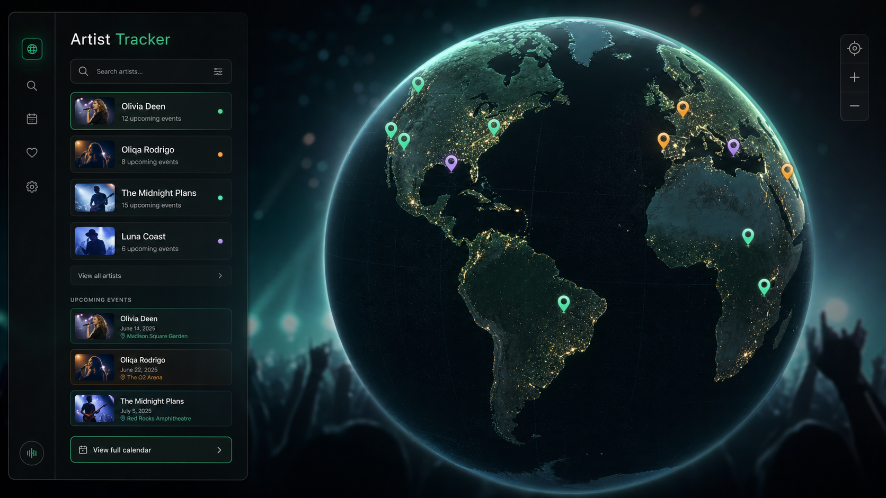

Artist Search
アーティスト名から候補を検索し、過去に保存されたDB情報を使ってインクリメンタルサジェストを返します。

Overview
Ticketmaster Discovery API から取得したアーティスト・イベント・会場情報をバックエンドで正規化し、会場の緯度経度をもとに地図へ表示します。
検索サジェスト、スペル補正、Redisキャッシュ、現地時間とユーザー時間の併記により、ライブ遠征の判断に必要な情報をひとつの画面にまとめます。
Demo
Features
アーティスト名から候補を検索し、過去に保存されたDB情報を使ってインクリメンタルサジェストを返します。
世界中のライブ会場を、地球儀ビューとマップビューの両方で確認できます。
イベント現地時間とユーザーのタイムゾーンに変換した時間を並べて表示します。
会場周辺のホテル検索や経路リンクを用意し、ライブ遠征の下調べにつなげます。
Architecture
Data Model
TicketmasterのアーティストID、名前、画像、ジャンルを保存します。
ライブ名、日時、販売状態、価格、紐づくアーティストと会場を管理します。
会場名、都市、国、住所、緯度経度を保存し、マップ表示に利用します。
Portfolio Notes
DBから候補を多めに取得し、前方一致、単語先頭一致、部分一致の順でランキングします。レーベンシュタイン距離によるスペル補正も組み込んでいます。
アーティスト検索とイベント取得の結果をTTL付きで保存し、Ticketmaster APIへの不要な再問い合わせを減らします。
Ticketmasterの現地日時を保持しつつ、ユーザーのタイムゾーンへ変換した表示を併記します。
Run Locally
npm run docker:up
# Frontend
http://localhost:3003
# Backend health check
http://localhost:3004/health
# Stop
npm run docker:down